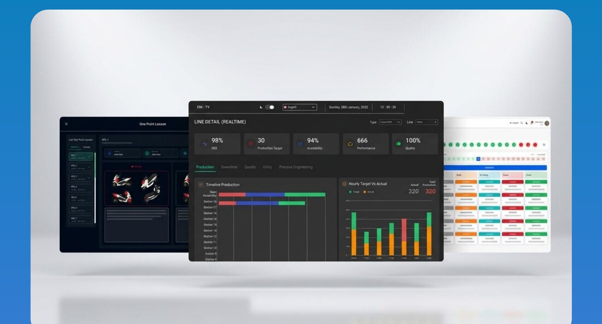
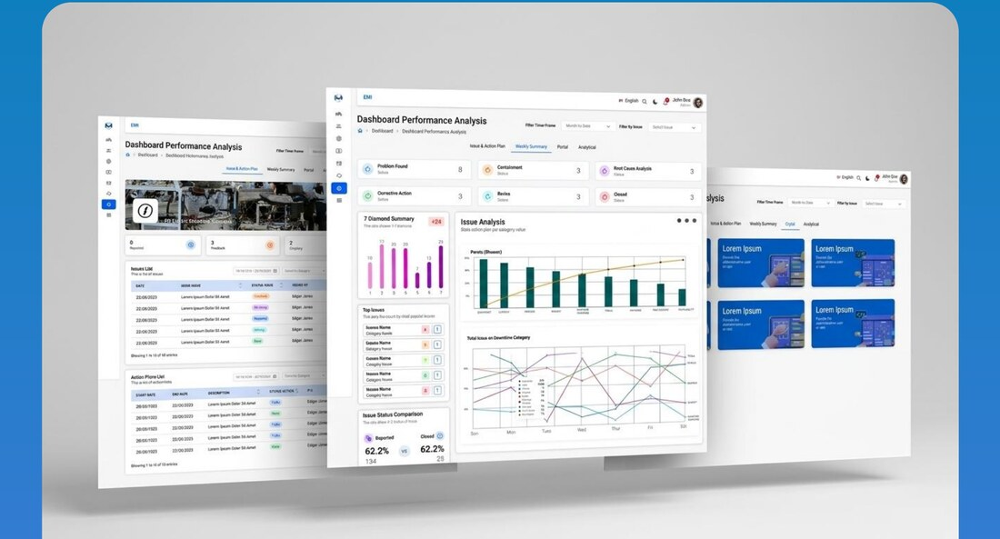
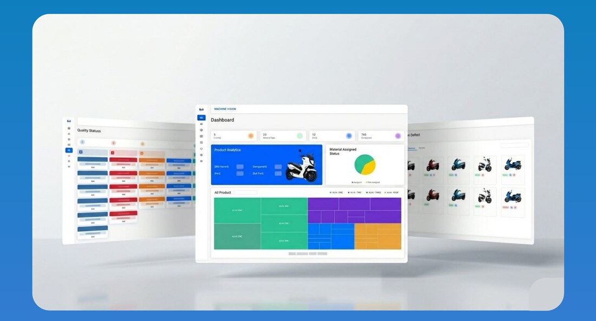

PT Electra Mobilitas Indonesia (ALVA)
Digitalisasi lini produksi motor listrik
Merancang MES untuk monitoring produksi real-time, PRTS untuk pelacakan penyelesaian masalah, dan sistem traceability material serta produk pada lini manufaktur ALVA.
MES — Manufacturing Execution System
MES dirancang untuk memantau proses produksi secara real-time di lini perakitan motor listrik ALVA — mulai dari OEE, target produksi, ketersediaan mesin, hingga performa dan kualitas per stasiun kerja. Operator dan supervisor dapat memantau timeline produksi dan membandingkan target dengan hasil aktual per jam.

PRTS — Problem Resolution Tracking System
PRTS membantu tim mencatat, mengelompokkan, dan menindaklanjuti setiap masalah produksi yang ditemukan di lini — dari root cause analysis hingga corrective action — lengkap dengan ringkasan performa penyelesaian masalah (7 Diamond) dan analisis tren isu per kategori.

Traceability System
Sistem traceability melacak status material dan produk jadi di setiap tahap produksi, memetakan alokasi material per varian produk, serta memberikan gambaran menyeluruh atas seluruh unit yang sedang diproses maupun telah selesai.
